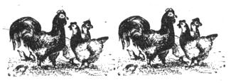

[1] First, staple one 48"" end of the cut poultry wire to the broad side of a 2 x 4, and suffix the opposite end along a second broad. [2] Cut a hole in the existing fence and fasten the new wire around the opening with twist ties. [3] Make sure the 2 x 4's are parallel before staking them in position. [4] A little hands-on ""persuasion"" will give the run a Quonset hut shape. [5] Chickens are quick to discover greener pastures.